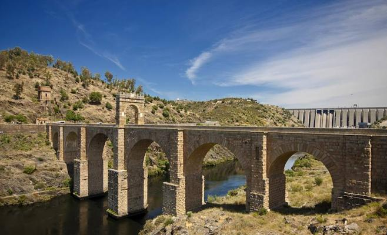
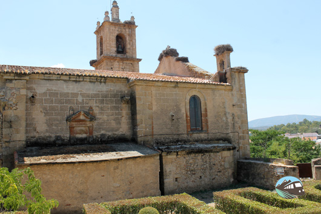
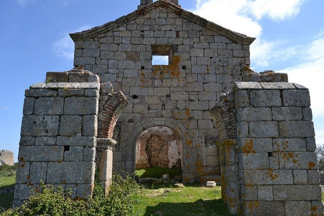

VALENCIA
Valencia de Alcántara es un municipio español de la provincia de Cáceres, en la comunidad autónoma de Extremadura. Comprende la villa del mismo nombre y varias pedanías como Alcorneo, El Pino o Las Huertas de Cansa. Con 5532 habitantes en 2017, es la capital del partido judicial de Valencia de Alcántara y de la mancomunidad de la Sierra de San Pedro. La localidad, que posee el título de "Muy noble, antigua y leal Villa", limita con Portugal y la provincia de Badajoz. Su proximidad a la frontera lusa dio a Valencia de Alcántara una gran importancia histórica en la Edad Moderna. Entre 1644 y 1668 Valencia de Alcántara perteneció al Reino de Portugal, y entre el siglo XVII y el siglo XVIII se construyeron los monumentos más importantes de la localidad, si bien el municipio es más conocido por sus dólmenes prehistóricos.

Andrea: Valencia fue fundada por los romanos como colonia en el año 138 a. C., siendo cónsul Décimo Junio Bruto Galaico, y se denominó Valentia Edetanorum. Varios siglos después, en el año 711, los musulmanes ocuparon la ciudad aportando su lengua, religión y costumbres, como la implantación de sistemas de riego y la introducción de nuevos cultivos. En 1238 el rey cristiano Jaime I de Aragón reconquistó la ciudad, y repartió las tierras entre los nobles que le ayudaron a conquistarla, tal y como queda testimoniado en el Llibre del Repartiment, así como también creó una nueva ley para la ciudad, los Fueros de Valencia, los cuales se hicieron extensivos al resto del reino de Valencia. En el siglo xviii, Felipe V derogó los fueros como castigo al reino de Valencia por alinearse con los austracistas en la guerra de sucesión española. En 1982 se instituyó a Valencia como la capital de la actual Comunidad Valenciana, tal y como recoge el Estatuto de Autonomía.
El puente de Alcántara es un puente romano en arco construido entre los años 103 y 104, que cruza el río Tajo en la localidad española de Alcántara, en la provincia de Cáceres. Es un puente que conjuga técnica depurada con estética y funcionalidad, uno de los más claros exponentes de lo que fue la ingeniería civil romana impregnada de carácter propagandístico. Ubicado en una zona aparentemente sin importancia, se construyó con toda magnificencia como vigía permanente del Imperio romano en una región bien considerada por sus yacimientos metalíferos.
Dolmen "Tapada del Anta", localizado en las inmediaciones de territorio lusitano, el dolmen Tapada del Anta es uno de los pocos que se conserva completo entre el aproximadamente medio centenar existentes en el municipio de Valencia de Alcántara. Mantiene siete ortostatos de gran tamaño, que conforman una cámara circular de más de dos metros de altura y unos cuatro de diámetro. La cubierta está algo deteriorada y tiene un corredor corto de acceso. Pueden verse también restos del túmulo, que estaba compuesto por tierra y pequeñas piedras del material granítico tan abundante en la zona. A la manera habitual, está situado sobre una pequeña colina y no demasiado lejos de una corriente de agua. En este caso la del río Sever, que sirve de frontera entre España y Portugal en esa zona.
La iglesia de Nuestra Señora de Rocamador es un templo católico ubicado en la localidad española de Valencia de Alcántara, en la provincia de Cáceres. Es de estilo gótico y data del siglo XVI con portada del siglo XVIII. Fue declarada Monumento histórico-artístico en 1981.
La casa de Lorenzo de Ulloa o casa de Ulloa es un edificio de estilo gótico situado en la plaza de San Mateo en el interior del recinto monumental de la ciudad de Cáceres. Se trata de una casa solariega cuya construcción se llevó a cabo durante el siglo XV.
Nunca está demás, hacer una visita a la Ermita de Valbón. Situada próxima al pantano de Alpotrel de Valencia de Alcántara, era una de las ermitas que rodeaban la villa. Levantada junto a otras por requerimiento de Felipe II en 1569, el nombre de esta ermita está tomado del portugués “valle bueno”. Las obras fueron encargadas a Juan Bravo, personaje relevante en el panorama arquitectónico de la Extremadura del siglo XVI.
